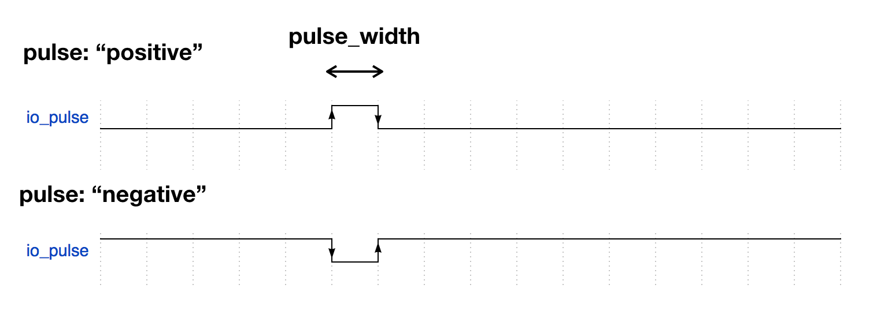

Hierarchy
- ObnizMeasureOptions
Index
Pulse generation Properties
Response measurement Properties
Pulse generation Properties
io_pulse
pulse
"positive" or "negative"
pulse_width
pulse duration in values between ms. 0.001 to 1000.
Response measurement Properties
Optional callback
callback function after measurement or timeout.
A callback function will be called when the edge count = measure_edges or timeout. It has an array of edge information. For example, if you get a response like below

then, you will get below
callback: function(edges) {
edges.length // == 2
edges[0].edge // == true
edges[0].timing // == t1
edges[1].edge // == false
edges[1].timing // == t2
}io_echo
io for measuring response. Please use with 'measure_edges' params.
measure_edges
maximum number of edges to detect. 1 to 4.
Optional timeout
timeout in ms, and default is 1000. 0.001 to 1000.
io number to generate pulse. Please use with 'pulse' and 'pulse_width' params.
